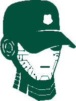
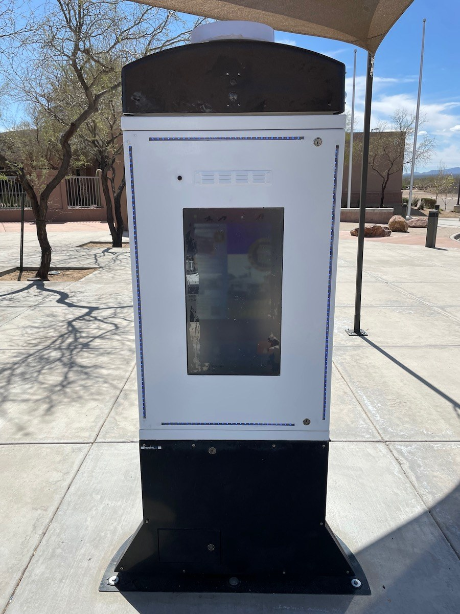
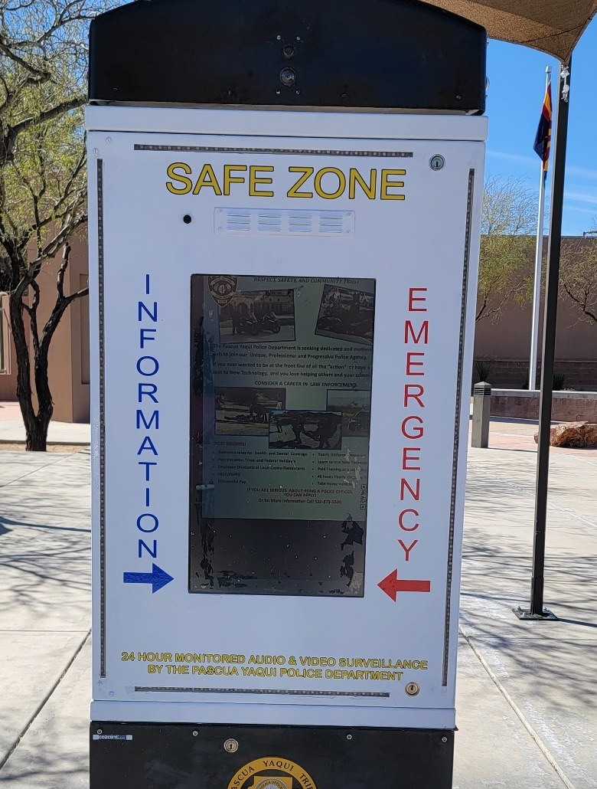

BOBBY™ Tower
More Eyes.
More Ears.
Always On.
A self-sufficient security kiosk that watches your property around the clock, talks with visitors, and brings in a live agent the moment something looks wrong.

Pick your place
One tower. Built around your site.
Tap where you'd put one. The touchscreen and the feature list change to fit.
Optional add-on marks capabilities that can be added to a tower. They are not included in the base unit.
Tell us about your siteAlways watching. Always answered.
The tower sees it. A person responds.
Every subscription includes access to Cozaint's Agent Monitoring Platform, so a live agent can verify what the tower detects. Choose what happens:

Installed at the Pascua Yaqui Police Department
What's inside
Everything on board.
- Connects by WiFi, wired Ethernet (CAT6e) or cellular
- Standard 110VAC power. About 6½ feet tall, 286 lb, on a ground plate that anchors to the site
- Power supply is UL 62368-1 listed and rated for -30° to +70°C
- Install is a ground plate, three tower sections, power and network. Then power up
Telescoping camera pole optional. Full dimensions and install steps are in the spec sheet below.
Where it matters
A safe zone the community can walk up to.

Pascua Yaqui Police Department
The tower marks a safe zone: an information button, an emergency button, and around-the-clock audio and video monitoring by the department. People can meet there with confidence, and reach an officer fast.
“With certain transactions occurring between complete strangers —such as online sales— sometimes our community may wish to meet at a more secure location where video surveillance and the ability to reach one of our officers in an emergency is all in one safe zone.”
Where would you put one?
Tell us about your site and what you want to watch over. BOBBY Tower is a monthly subscription, and leasing is available.